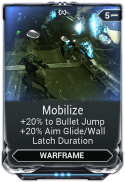

Arcane Consequence is a great general purpose arcane to use on just about any frame with any build.
You simply need to hit a headshot on an enemy to give yourself a massive velocity boost.
This arcane's effect can be refreshed while it's active to reset the effect timer.
Any player with fairly accurate aim will find it easy to activate this arcane and keep it's effect active at almost all times.
Arcane Consequence can be obtained by killing or capturing an Eidolon Teralyst or by trading with other players.
Please note that arcanes have levels and 21 individual arcanes are needed to combine into one max rank version(rank 5).
Mobilize
+20% to Bullet Jump, +20% Aim Glide/Wall Latch Duration

Mobilize is a great mod to work into your build if you're looking to go just a bit faster or need a cheaper alternative to arcane consequence.
Although the boost isn't as much as consequence, the bonus is worth it if you have an open slot in your build. This mod is also very cheap with a drain of 5 at max rank.
Mobilize can be obtained from Drekar Lancers and Drekar Elite Lancers in Grineer Sealabs on Uranus.
If you're still looking for a bigger boost but want to keep using a mod for it, the following mods are better versions of Mobilize.
Ice Spring
Firewalker
Lightning Dash
Toxic Flight
Each of these mods are an improved version of Mobilize with an added elemental damage to your jumps.
These mods also come with an increased mod drain of 12.
Movement Item Drop Information
Ice Spring: Drekar Butcher, Kuva Jester, Sabotage on Desdemona, Uranus (Caches, Rotation C)
Firewalker: Drekar Hellion, Kuva Jester, Sabotage on Desdemona, Uranus (Caches, Rotation C)
Lightning Dash: Kuva Jester, Sabotage on Desdemona, Uranus (Caches, Rotation C)
Toxic Flight: Drekar Ballista, Sabotage on Desdemona, Uranus (Caches, Rotation C)
Mobilize: Drekar Lancer, Drekar Elite Lancer, Sabotage on Desdemona, Uranus (Caches, Rotation B)
Movement Item Drop Information
Item Name
Item Type
Location
Ice Spring
Warframe Mod
Drekar Butcher, Kuva Jester, Sabotage on Desdemona, Uranus (Caches, Rotation C)
Firewalker
Warframe Mod
Drekar Hellion, Kuva Jester, Sabotage on Desdemona, Uranus (Caches, Rotation C)
Lightning Dash
Warframe Mod
Kuva Jester, Sabotage on Desdemona, Uranus (Caches, Rotation C)
Toxic Flight
Warframe Mod
Drekar Ballista, Sabotage on Desdemona, Uranus (Caches, Rotation C)
Mobilize
Warframe Mod
Drekar Lancer, Drekar Elite Lancer, Sabotage on Desdemona, Uranus (Caches, Rotation B)